Banners appear at the top of pages that enable this feature.
Banners are a "Media Asset" that can be created while you are adding or updating a page or other content of the site.
Banners are re-usable which means you can use the same banner on multiple pages without having to re-create the banner.
When you add multiple banners to a single page, it creates a slide-show display.


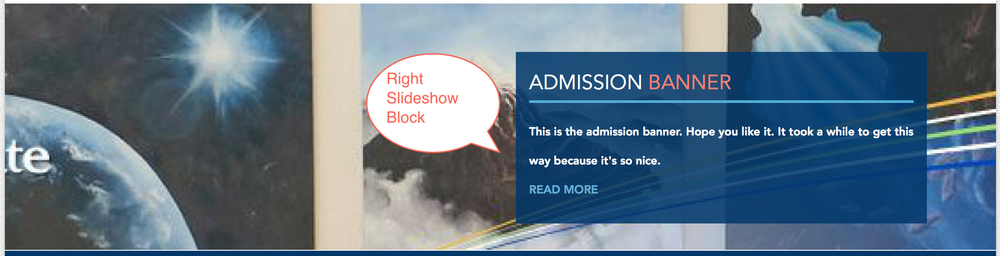
You'll more than likely create a new banner while creating a page. Here are the steps to create one.
Create a page by navigating to the following in the administration menu:
Content > Add content > Page
There are two buttons at the top of the 'Create Page' form:
'Add new Media Asset' and 'Add existing Media Asset'
Since we want to create a new Media Asset (Banner), click:
'Add new Media Asset'

The 'Add New Media Asset' dialog will appear. The first thing you'll want to do is Select an Image

Click Browse to locate an image on your computer.
Once you've selected an image on your computer, click Upload to upload the image.

Click Next to continue.

Enter Alt Text and Title Text
Alt Text: Displays when the image isn't loaded Title Text: Displays when the image is hovered
Click Save to finish saving the image to this banner.

After you've saved an image, it should appear above the Title field.
Next, enter a Title for this banner. The title field is only used for administrative purposes. The title field is not shown on the banner.
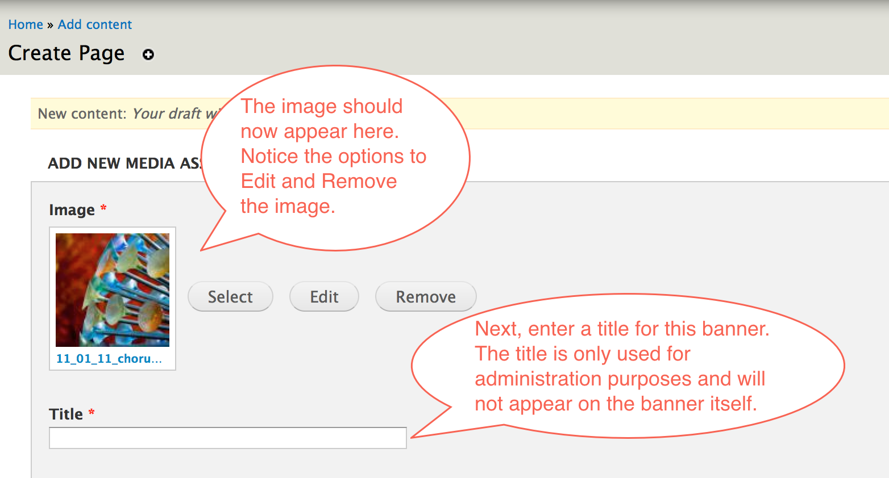
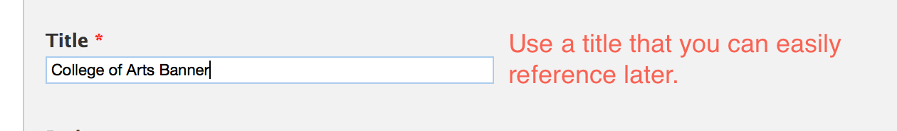
The Body holds the text overlay of the banner.
Click the DIV button
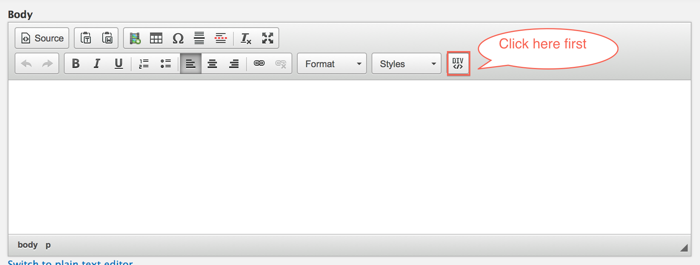
After clicking the DIV button, a popup will appear.
On the left, select the Style of slideshow you want.

There are two Slideshow Styles
Left Slideshow Block and Right Slideshow Block
Text on the banner will be aligned to the left or right respectively.
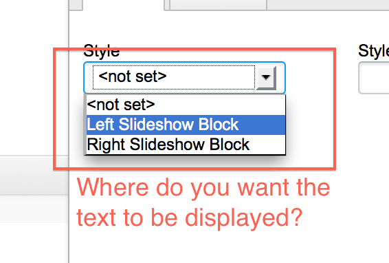
After selecting the Slideshow Style, your screen should look like this.

Change the text style to Heading 2
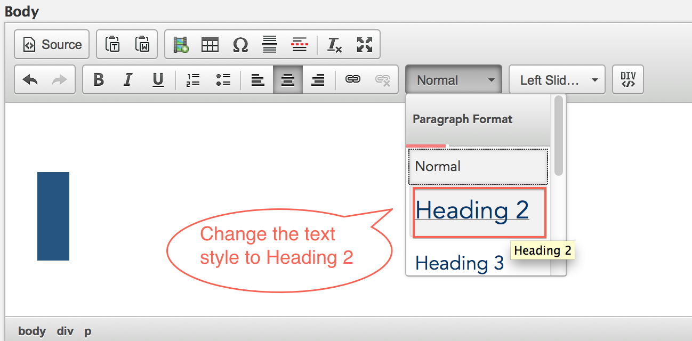
Select a Formatting Style to change the text looks.
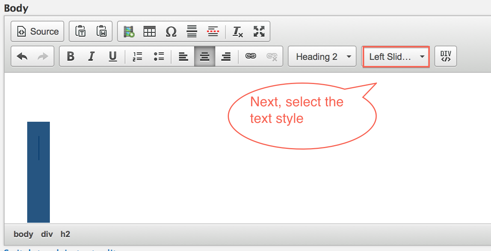
In this example, we selected 'Large Line'

Start typing to see what the text looks like.

Once you are happy with the top line, press Return/Enter to start a new line.
Click the Formatting Styles drop down to change the text style again.
In this case, we selected the 'Line Title' style.
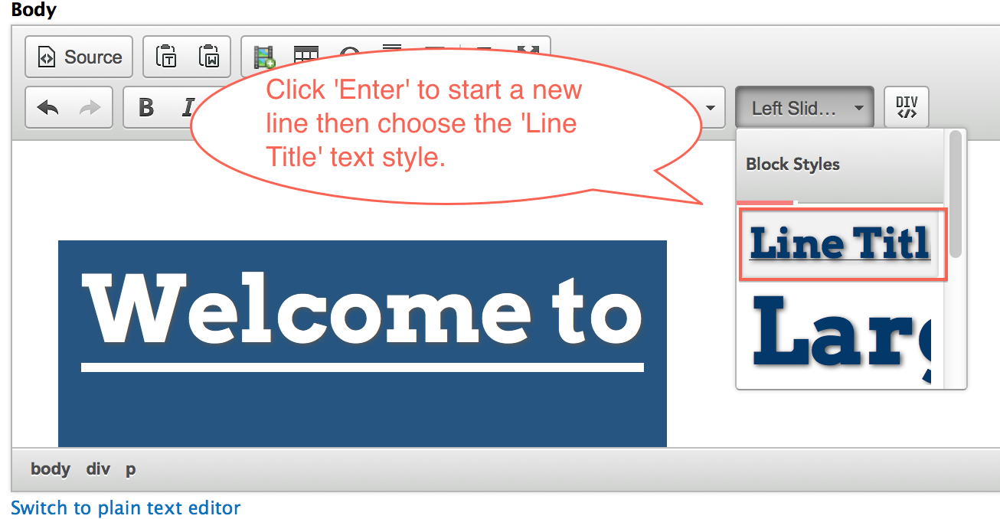
Start typing to see the new style.

Once you are satisfied with your banner overlay text, then click the Create Media Asset button.

If you would like to re-use an existing banner here are the steps to do so.
When you are creating or updating a page, click the Add existing Media Asset button.
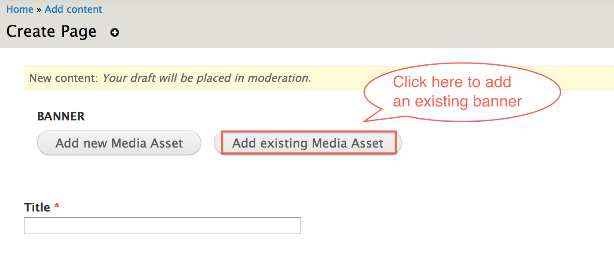
Enter the name of the banner would like to add to the page.
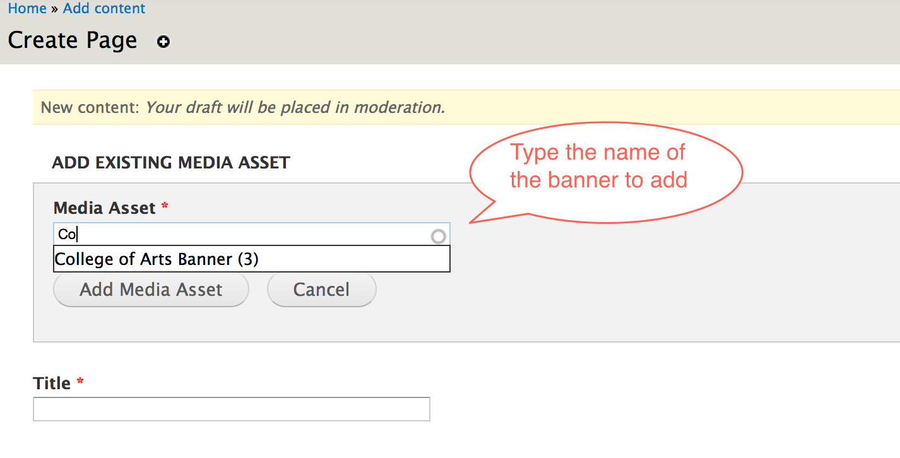
Select the banner that you would like to add to the page.

Click Add Media Asset to add to the page.

The good thing about re-useable banners is that when you update a banner in one place, it will update the same banner throughout the site.
Here are the steps to update a banner.
On the administration menu, navigate to
Structure > Entity Types > Media Asset > Splash
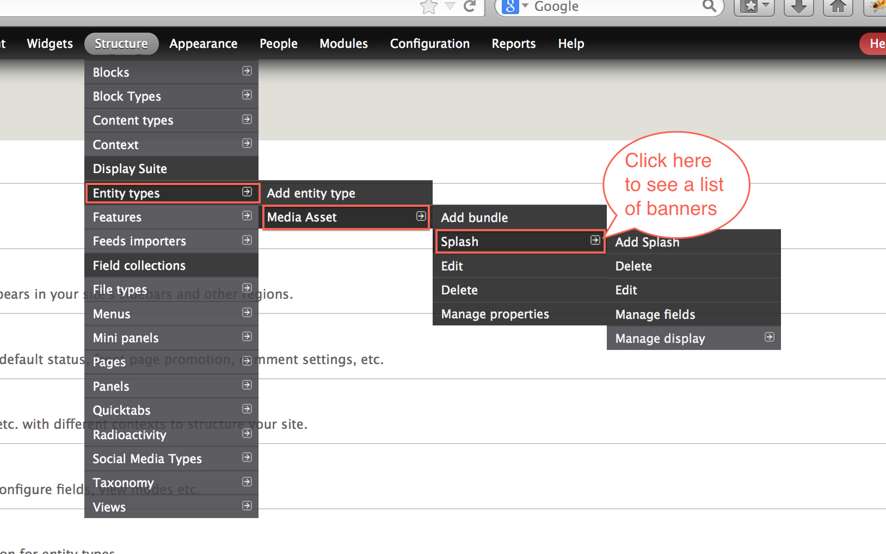
You will then see a list of banners that currently exist on the site.
Under the OPERATIONS column, click edit for the banner you would like to update.
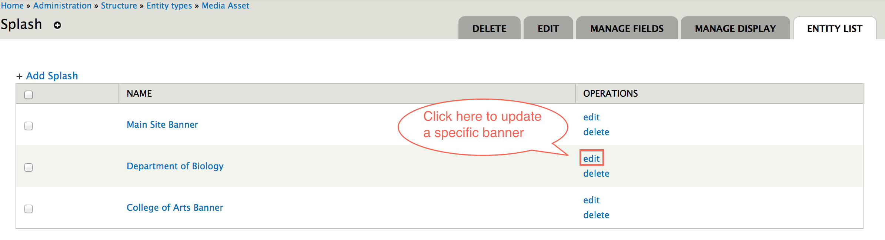
Make the changes that you want.
When you're finished click the Save button at the bottom of the page.
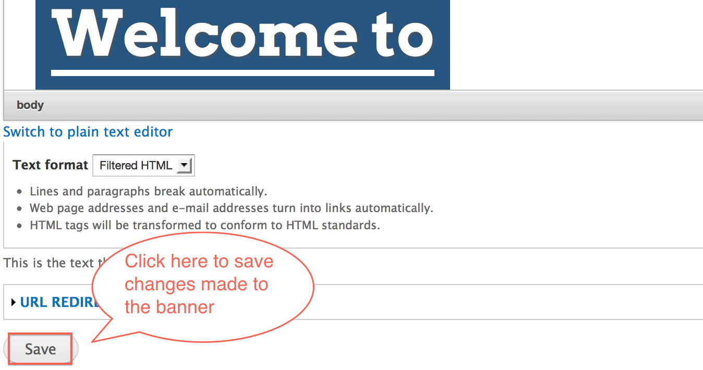
Created on December 20, 2013
Last modified on December 23, 2013
Authored by Gray Sadler